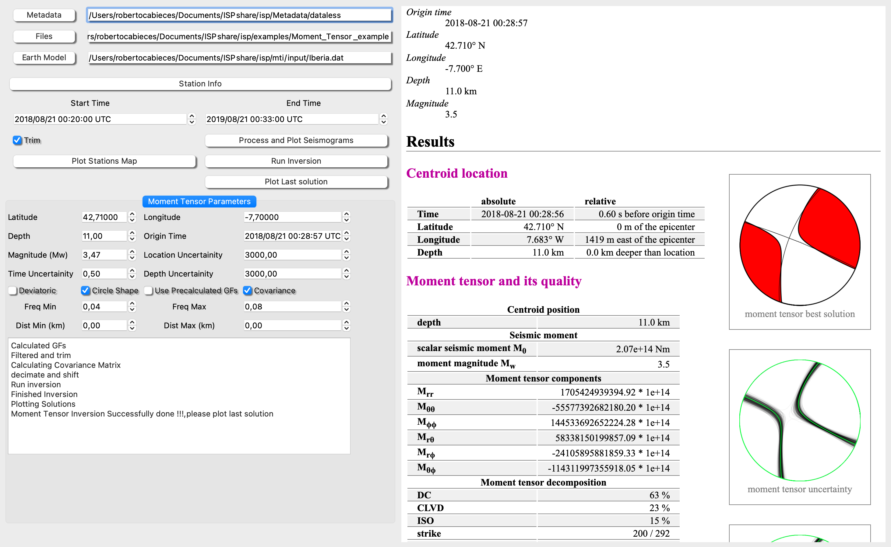

Moment Tensor Inversion
Create Earth velocity model
To start you need to load a Earth model. Go to Build à Earth Model and open the Earth Model Form, the fill it and save it.

Bayesian Inversion
The user needs to fill the following fields to go on with the inversion:
Metadata >> Path to the file where you have the metadata. This is necessary to extract the stations coordinates and the instrument information to do the deconvolution (this is not totally necessary, the user can manage the seismograms already in velocity units).
-
Files >> path to the seismogram files
-
Earth Model >>> Path to the Earth model file (see previous section for see how to make this file with ISP, the user can also do it manually).
-
Time Window >>> Set the window in which the seismograms will be used (StartTime, EndTime and CHECK trim).
-
Macro >> You can set a Macro to make basic processing over the seismograms
Now Follow this steps,
Process and plot Seismograms Open Stations info. This action will allow you select which station/component will be used in the inversion
Plot stations Map (First, fill Latitude Longitude and depth) This is optional - Fill the info: - Hipocenter location and Uncertainity (m) - Origin Time and Uncertainity - Magnitude - Frequency range for the inversion (see Fig 2 for example) - Distance filter. Avoid statations out of the distance filter (Distance from epicenter to station) - Option Deviatoric, Circle, Shape, Covariance (please because it uses previous noise window for inversion, select long enough prevent window (i.e., 10 min)) and use precalculated Green functions
Pre-calculated Green Functions is useful because, once you have run an inversion then you may filter the inversion selecting different components or distances
